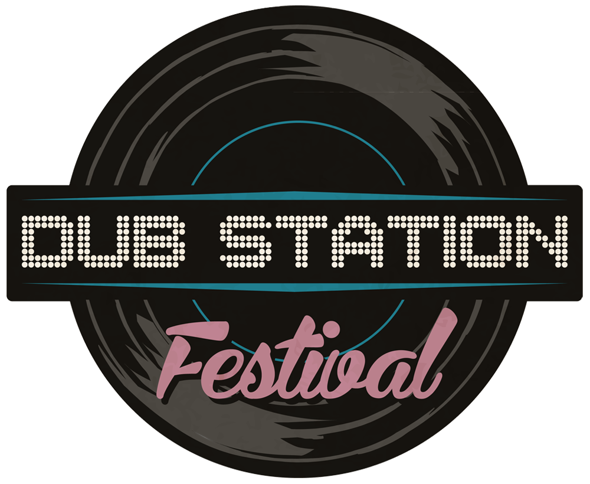

PRESENTATION
Créée en 2002, Musical Riot démarre son histoire par la gestion du « TRIBUTE » à Luynes,
petite salle de concert de 300 places. Plus de 160 concerts et 2500 adhérents rendront ce lieu incontournable
dans le paysage culturel local. Malgré une programmation éclectique, Musical Riot s’est rapidement spécialisée
dans la venue d’artistes « Reggae » et « Dub » de renom. De nombreux groupes et DJ de plusieurs
nationalités ont foulé les planches du Tribute, apportant un éclairage international à ce petit lieu situé au
milieu de nulle part.
Contraints à l'exil pour des raisons financières, l'association développe alors son activité dans
différents lieux de la région, puis partout en France en devenant Tourneur/Producteur.
En 2005, l’association aixoise créait les
DUB MEETINGS avec le Cabaret Sauvage comme quartier général.
Dub Meetings qui deviendront en 2007 les
DUB STATION, véritable label pour des soirées qui s’exporteront
dans de nombreuses villes et festivals français et ailleurs en europe.
Aujourd’hui, de nombreux collectifs existent partout en Europe, ce mouvement est largement répandu
et ses artistes se produisent dans les plus importants festivals européens. Musical Riot a largement
contribué à cet essor en prenant la direction artistique de nombreux évènements dédiés à cette
culture : Garance Reggae Festival (Bagnols sur Cèze), Rototom Sunsplash (Benicassim / Espagne),
Télérama Dub festival (Paris).
En 2010, Musical Riot se décide à organiser un festival en partenariat avec la Ville de Peyrolles en Provence, soutenu par l'Élu Culture qui fut de nombreuses fois spectateur de nos concerts et qui deviendra par la suite le Président de l'association ! La seconde édition se déroula au pied du Château, en plein cœur de la ville, et correspondra plus aux attentes artistiques de l’association avec la venue de deux artistes anglais de renommée internationale. Depuis 2013 à Vitrolles, au Domaine de Fontblanche, l'évènement est baptisé DUB STATION FESTIVAL et s'étend sur deux jours. Alliant la scène internationale et locale dans un parc magnifique.
